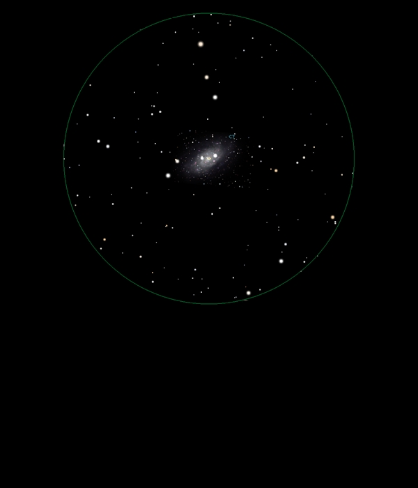

NGC 2403
Intermediate
Spiral Galaxy in Camelopardalis
NGC 2403
Mag 8.9
Caldwell 7
07/01/16
A rather ragged Galaxy sitting between two stars of Mags 9.9
and 10.35
A hint of structure in 12mm in moments of good seeing,
however, because it is relatively close to the Pole Star
observing, and finding, is awkward!
02/02/16
A really interesting Galaxy, not just because it is
quite large with a hint of structure but because within it,
optically at least, are two stars of Mags 9.90 and 10.35 which
appear to be at each end of the elongated shape
With inverted vision the Galaxy extends beyond the two stars